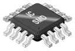

By W.Rebel (Own work) [
CC BY-SA 3.0
], via
Wikimedia Commons
ECE 214 - Electrical Circuits Laboratory
Data Sheets, Reference Material, and Test Equipment Manuals
Department of Electrical and Computer Engineering
University of Maine
Data Sheets for Electrical Components
LM 741 Operational Amplifier
TL 082 Operational Amplifier
2N7000 N-Channel Field Effect Transistor
IRFD110 Power MOSFET
IN4001 Diode
3210C Inductor
Digilent Analog Discovery 2
Reference Manual
Pin-Outs
BNC Reference Manual
Power Brick Reference Manual
WaveForms 2015 Reference Manual
WaveForms 2015: Getting Started Guide
Tutorials
Using the Waveform Generator
Using the Power Supplies
Using the Oscilloscope
Using the Spectrum Analyzer
Using the Network Analyzer
Digilent Technical Forums
Reference Material
Resistor Color Code
Parts Cabinet in Whitney Lab (228 Barrows)
Tutorial – How to use an oscilloscope
Matlab and NGspice files
Some Useful Matlab Commands
Matlab Template file for running NGspice
MATLAB .m file for Lab 1 (Post-Lab A - symbolic solution)
MATLAB .m file for Lab 1 (Post-Lab A - graphing)
MATLAB .m file for Lab 1 (Post-Lab B - NGspice simulation)
MATLAB .m file for Lab 5 (Schmitt Trigger)
MATLAB .m file for Lab 5 (Oscillator)
Copyright ©
David E. Kotecki unless otherwise attributed.
{kind=link}
{kind=link}